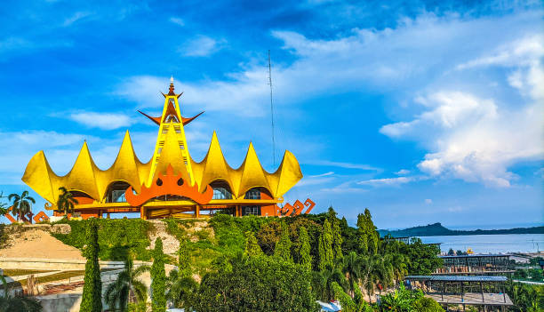

Lampung: The Gateway to Sumatra and Land of Diverse Cultures
Lampung, located at the southernmost tip of Sumatra, serves as the gateway to the island and boasts a rich blend of cultures, natural beauty, and historical significance. From its stunning beaches and national parks to its diverse ethnic groups and traditional arts, Lampung offers a captivating experience.
A Crossroads of Cultures:
Lampung is home to a variety of ethnic groups, each contributing to the province's rich cultural tapestry:
Natural Beauty and Biodiversity:
Lampung is blessed with diverse natural landscapes:
Historical Significance:
Lampung's history is marked by various influences, including:
Economic Potential:
Lampung's economy is driven by:
Lampung Today:
Lampung continues to develop its infrastructure and economy while preserving its unique cultural and natural heritage. The province is also focusing on sustainable development and promoting tourism.
Lampung offers a diverse and captivating experience for visitors, combining natural beauty, cultural richness, and historical significance. Here's a deeper look:
Ancient and Colonial History: Lampung's history encompasses ancient kingdoms and the period of Dutch colonial rule.
Indigenous Lampung Culture: The unique customs, traditions, and dialects of the Pepadu and Pesisir people are central to Lampung's cultural identity.
Cultural Diversity: The presence of other ethnic groups has enriched Lampung's cultural landscape.
Way Kambas National Park: This national park is a crucial conservation area for Sumatran elephants and other wildlife.
Coastal Attractions: Lampung's beaches and coastal areas offer opportunities for various water activities and relaxation.
Krakatoa's Legacy: The iconic Krakatoa volcano is a reminder of the region's geological history and a popular tourist destination.
Lampung is focused on developing its economy, particularly in the agricultural and tourism sectors, while preserving its natural and cultural heritage. The province plays a vital role as the gateway to Sumatra.
